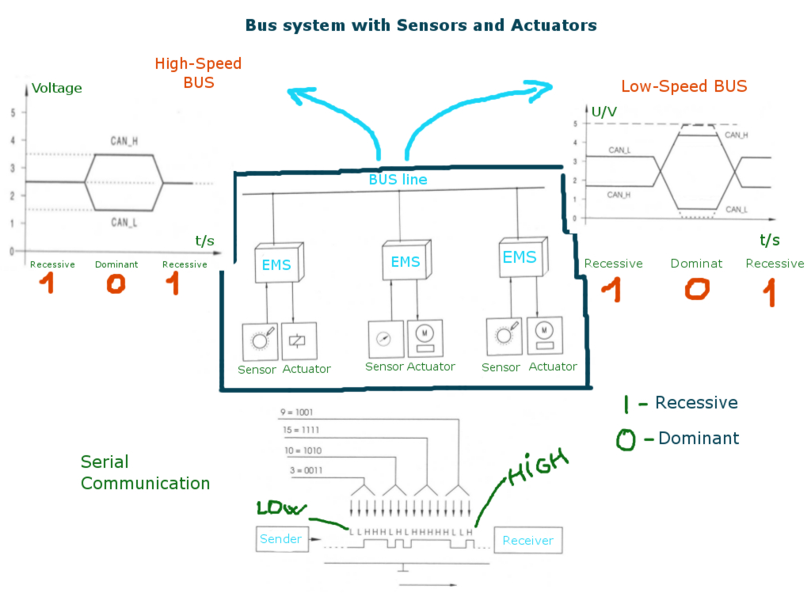

Controller Area Network: sensors
Închide meniu
Acasă
Magistrala CAN ∵
In the beginning
Controller Area Network
CAN: electric circuit
CAN: basic concept
CAN: 11 bit identifier
CAN: 29 bit identifier
CAN: message format
CAN: types of frame(I)
CAN: types of frame(II)
CAN: arbitration(I)
CAN: arbitration(II)
CAN: sensors
CAN: bit stuffing
CAN: non return to zero
CAN: time trigerred
CAN: trigerred messages
CAN: bus system
CAN: HW connections
☰
❮
❯
VRU
⟢ CAN: sensors
